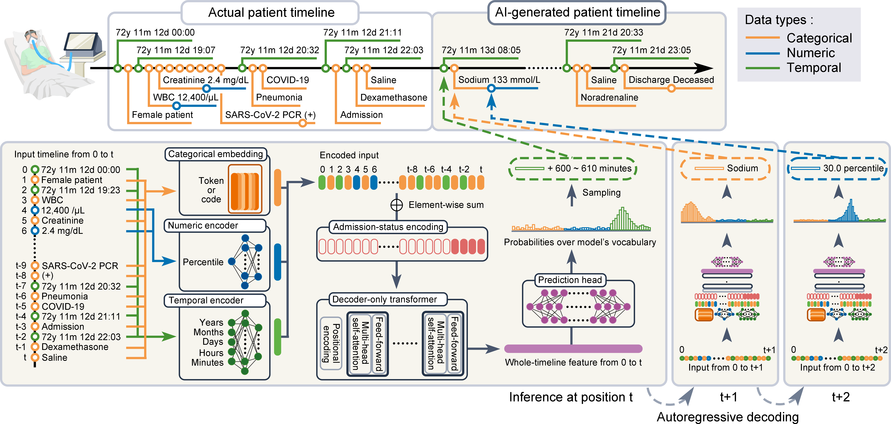

Watcher Documentation
Watcher is a generative AI model that simulates patient timelines. The AI takes a patient timeline—real or synthetic—as input and autoregressively generates future clinical timeline. It enables computational modeling of patient trajectories. These capabilities may support future downstream applications such as personalized medicine, in-silico clinical trials, and counterfactual predictions. Or, it can simply synthesize large-scale synthetic patient databases.

Watcher was initially designed as the backend simulator in our digital-twin framework (see below). However, it can also be used independently as a stand-alone simulation engine for various applications.
Start with 👉 Tutorial
GitHub 👉 https://github.com/yuakagi/Watcher
Model Overview
{kind=link}

Watcher takes a patient timeline as input and autoregressively generates future clinical events. It encodes categorical, numeric, and temporal entries into vectors, which are processed by decoder-only transformer layers. At each step, the model outputs a probability distribution over its entire vocabulary.
Digital-Twin EHR System
Watcher serves as the backend simulator in our digital-twin framework (Figure):

This system enables the simulation of patient trajectories based on real-world clinical data, allowing opportunities for possible downstream applications such as personalized medicine, in-silico clinical trials and more. It consists of three components:
AI model [GitHub]: A generative model that simulates patient timelines. (👈 This package you are currently reading.)
Digital-twin EHR [GitHub]: A web-based, AI-powered EHR that interacts with the model and visualizes simulation results.
Data pipeline: A data pipeline that supplies real-world clinical data to the data server. (Use our data pipeline or,use clinical data you prepared yourself)
To use the full digital-twin system, please follow these steps:
- Step 1: Prepare your clinical data (please see the note below)
Required clinical data are defined in Clinical Records
You can use your own clinical data or publicly available datasets.
Or, for Japanese hospitals, you can use our data pipeline to collect and clean clinical data.
- Step 2: Upload clinical data to database (Use Watcher package)
Watcher package provides a docker container for PostgreSQL database.
You can upload your clinical data to the database using the package.
- Step 3: Train the AI model (Use Watcher package)
Train (pretrain & fine-tune) the AI model using the Watcher package following the tutorial.
- Step 4: Launch the simulation API server (Use Watcher package)
The Watcher package provides a simulation API server that runs the AI model (gunicorn + Flask).
This will be the API server that the digital-twin EHR system will communicate with.
Launch the server following the tutorial.
- Step 5: Launch the digital-twin EHR system (Use TwinEHR)
TwinEHR is a Django based web application that provides a user interface for the simulation API.
Clone the repository and set proper environment variables to connect to the simulation API server.
Then, run the Django server and access the web application.
Note
Although we provide a data pipeline for the Japanese HL7 standard only, users outside Japan are fully supported.
The digital-twin system can run independently of location, as long as clinical data are structured into relational tables following our schema (see Clinical Records).
Prepare your own datasets or publicly available clinical datasets, and preprocess them to match the schema used in this package.
For Japanese users, our data pipeline can conveniently collect and clean clinical data, but its use is not mandatory.
Watcher API: